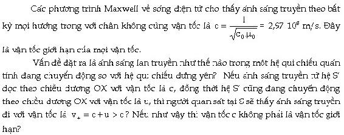
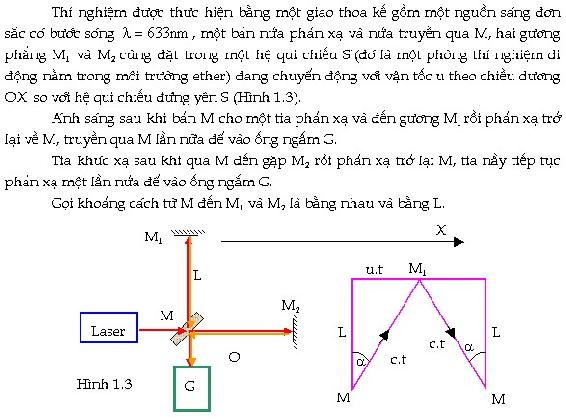
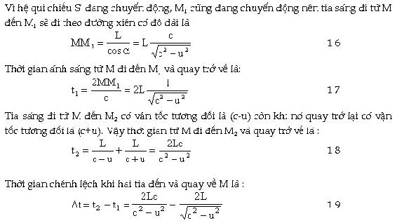
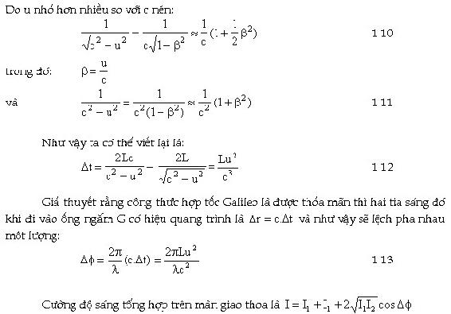
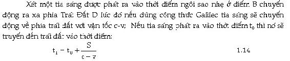
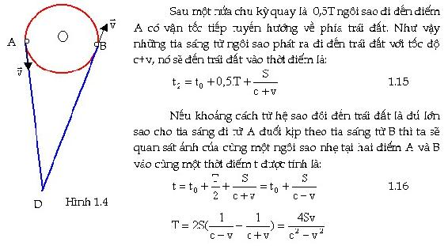

Cuối thế kỷ 19 đa số các nhà vật lý tin rằng vũ trụ được lắp đầy bởi một môi trường vật chất đặc biệt gọi là ether hỗ trợ cho sự lan truyền của sóng điện từ. Ðiều giả thuyết nầy dựa vào cơ sở là các sóng cơ học đều cần một môi trường trung gian để truyền tương tác. Aïnh sáng đi qua ether với tốc độ là c bằng nhau theo mọi hướng.



trong đó I1, I2 lần lượt là cường độ của hai tia sáng thành phần cùng đi vào ống ngắm G. Thí nghiệm được làm lại nhiều lần trong điều kiện người ta quay dụng cụ thí nghiệm theo những góc khác nhau so với trục OX nhưng vẫn giữ nguyên phương chuyển động của S so với S là OX.
Sự tính toán bằng công thức hợp tốc Galileo cho ta kết qủa là theo những góc khác nhau thì hiệu số pha của các tia sáng thành phần đi vào ống ngắm G là khác nhau. Tức là cường độ sáng tổng hợp trên màn giao thoa khác nhau.
Theo tính toán thì cường độ sáng tổng hợp trong ống ngắm G sẽ thay đổi rất lớn, rất dễ quan sát khi mà ta quay dụng cụ thí nghiệm theo những góc khác nhau. Nhưng thực tế người ta không quan sát được sự thay đổi cường độ sáng khi quay dụng cụ thí nghiệm. Tức là hiệu số pha và hiệu thời gian truyền của hai tia sáng là như nhau.
Thí nghiệm nầy có thể chứng tỏ ánh sáng truyền theo mọi phương với cùng vận tốc là c chứ không tuân theo công thức cộng Galileo. Không thể có vận tốc lớn hơn c.
Năm 1913 de Sitter đã bác bỏ phép cộng vận tốc Galileo đối với ánh sáng trên cơ sở quan sát chuyển động của các ngôi sao đôi.
Sao đôi là hai ngôi sao ở gần nhau, chuyển động xung quanh một trọng tâm. Nếu một ngôi sao nặng hơn ngôi sao kia rất nhiều thì ngôi sao nhẹ sẽ chuyển động xung quanh ngôi sao nặng như một vệ tinh. Ðể đơn giản ta xem ngôi sao nặng là đứng yên còn ngôi sao nhẹ chuyển động xung quanh với vận tốc v (Hình 1.4).

S là khoảng cách từ ngôi sao đến bề mặt trái đất.

Ta có thể chọn được một số hệ ngôi sao đôi thỏa tính chất trên để quan sát. Nhưng trên thực tế ta không bao giờ quan sát được. Như vậy không thể chấp nhận phép cộng vận tốc Galileo cho ánh sáng.
Nguyên lý tương đối trong cơ học Newton nói rằng các hiện tượng cơ học đều xảy ra như nhau trong mọi hệ qui chiếu quán tính nhưng không nói rõ các hiện tượng khác như là nhiệt, điện, từ có xảy ra như nhau trong mọi hệ qui chiếu quán tính? Theo phần điện từ trường ta thấy tương tác từ xảy ra chủ yếu là do dòng điện tức là do chuyển động của các hạt mang điện. Như vậy có thể trong các hệ qui chiếu quán tính khác nhau các hiện tượng điện từ sẽ xảy ra khác nhau. Nhiều thí nghiệm được thực hiện với các hệ qui chiếu quán tính khác nhau với mục đích tìm ra một hệ qui chiếu quán tính mà ở đó tốc độ ánh sáng khác hẳn với tốc độ ánh sáng trong các hệ qui chiếu quán tính khác. Nhưng những thí nghiệm đó không đạt được kết qủa.
Năm 1905 Einstein phát biểu nguyên lý tương đối về sự bình đẳng của các hệ qui chiếu quán tính cụ thể bằng hai tiên đề sau:
Tiên đề 1: Mọi hiện tượng Vật lý (Cơ, nhiệt, điện, từ...) đều xảy ra như nhau trong các hệ qui chiếu quán tính. Ðiều nầy cho thấy các phương trình mô tả các hiện tượng tự nhiên đều có cùng dạng như nhau trong các hệ qui chiếu quán tính.
Tiên đề 2: Tốc độ ánh sáng trong chân không là một đại lượng không đổi trong tất cả các hệ qui chiếu quán tính.
Giả thuyết 1 phủ định sự tồn tại của một hệ qui chiếu quán tính đặc biệt ví dụ như một hệ qui chiếu đứng yên thật sự. Nói cách khác mọi hệ qui chiếu quán tính là hoàn toàn tương đương nhau. Từ tiên đề nầy các nhà khoa học khẳng định không thể tồn tại một môi trường ether truyền sóng điện từ (ánh sáng) với một vận tốc khác biệt các hệ qui chiếu khác.
Phép biến đổi GALILEO làm cho các phương trình NEWTON bất biến. Điều đó không có gì xung đột với giả thuyết thứ nhất của Einstein tuy nhiên khi xét đến thời gian thì trong thực tế định luật Newton thứ hai sẽ phải bổ sung lại.
Dựa vào giả thuyết 2 ta có thể giải thích thí nghiệm Michelson và thí nghiệm Sitter vì vận tốc truyền ánh sáng là như nhau theo mọi phương nên không thể sử dụng công thức cộng vận tốc Galileo cho ánh sáng.